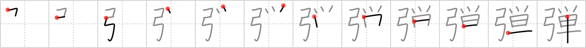

弾
← →
bullet

Reading:
On-Yomi: ダン、タン — Kun-Yomi: ひ.く、-ひ.き、はず.む、たま、はじ.く、はじ.ける、ただ.す、はじ.きゆみ
Heisig story:
Bow . . . simple.
Koohii stories:
1) [mspertus] 30-3-2007(215): Hunting with a bow is too complicated. I'm switching to something simpler–using a bullet.
2) [astridtops] 11-2-2007(55): The bow was a weapon for simple times, but nowadays it has been replaced by bullets.
3) [fuaburisu] 13-1-2006(36): Give a bow to simple-minded blond girl (see frame 1928), and she'll try to shoot bullets with it ! When she joined this local archery club she was told she needed some equipment, and guess what she did ? She went to the grocery store and bought some bullets.
4) [bihzad] 8-5-2008(16): Bows are rather simple devices compared to things that use bullets.
5) [icamonkey] 2-7-2009(6): Bullets make bows look simple and obselete.